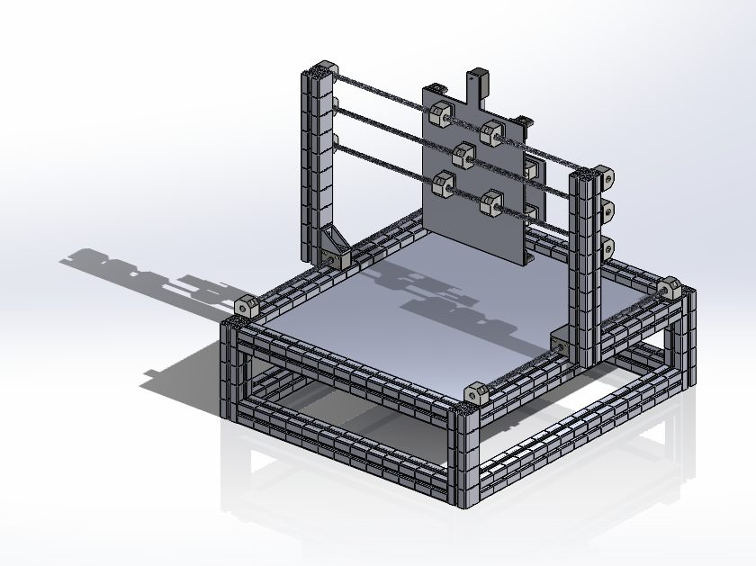

Machine design · automation
3-Axis Cartesian Gantry for a CNC Cell
Pick-and-place gantry that moves workpieces from a storage rack to a CNC milling machine – full assembly and design review.
Read more
Goal
Low-budget laboratory automation built only from standard, easy-to-buy parts: 710 × 681 × 690 mm envelope, 600 mm axis travel.
Process
Compared gantry, horizontal and vertical robot layouts and chose a Cartesian gantry for cost and simplicity. Built the frame from 45 mm aluminium profiles with igus bearings, Ø10 lead screws, stepper motors and DIN fasteners. A later design review with interference analysis found two issues and fixed them: an oversized base plate (520 × 620 → 515 × 595 mm) and linear bearings running on threaded rods (now separate Ø10 h6 guide rods plus a Tr10×2 lead screw).